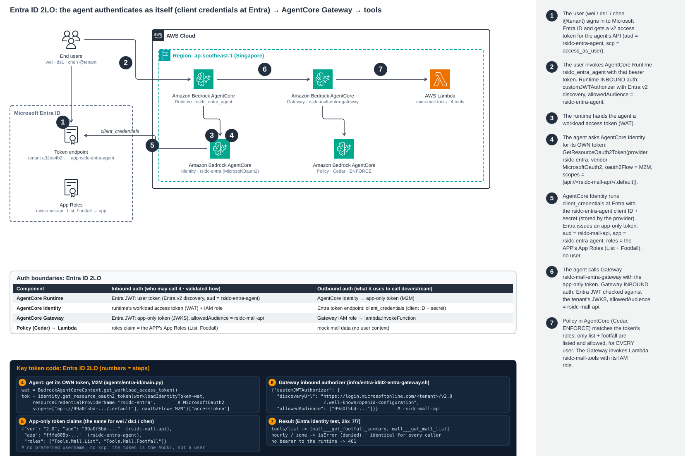

架构：用户 → AgentCore Runtime → AgentCore Identity (M2M) → Entra ID → AgentCore Gateway → Lambda

查看原图 · 用户的 token 只到达 Runtime；Gateway 和 Cedar 看到的是 app-only token，其
roles 是 agent 应用的 App Roles，因此每个用户拿到的工具都相同。